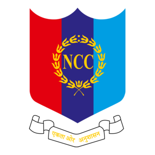
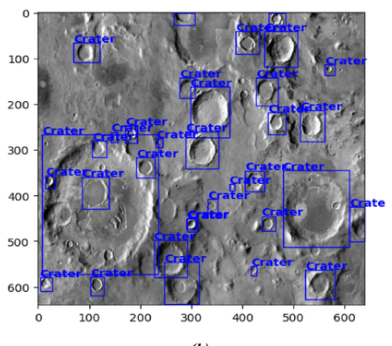
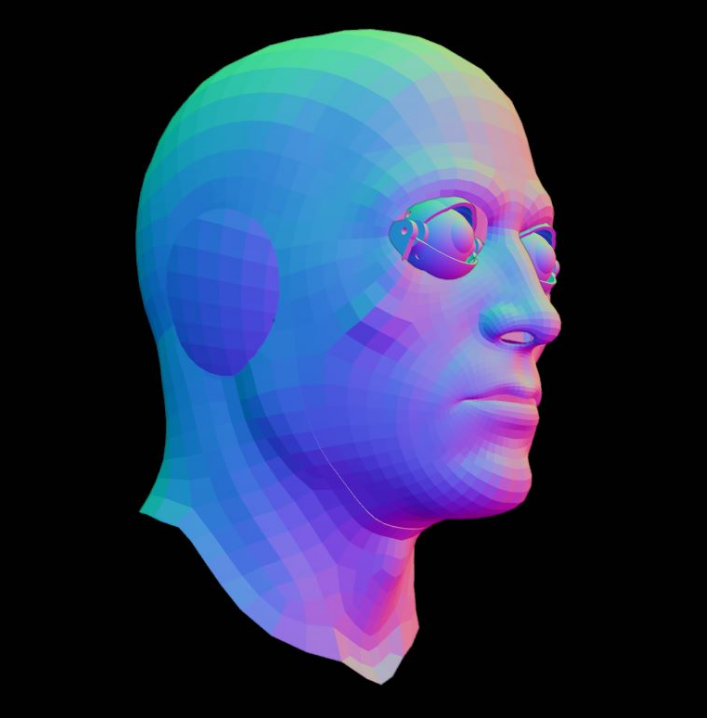

Education

Bachelor of Engineering - B.E. Computer Science
Birla Institute of Technology and Science, Pilani - Goa Campus
August 2024 - Present
Student at The Air Force School
The Air Force School (TAFS), Subroto Park
The Air Force School (TAFS), Subroto Park
2015 - 2024
Experience
Junior Consultant at 180DC Bits Goa
Feb 2025 - Present
- I am involved in:

Research Intern at Spartificial
August 2022 - November 2022
- Worked as an intern in Spartificial, specializing in artificial intelligence projects.
Collaborated with a team of professionals on cutting-edge projects involving computer vision and machine learning.
Gained hands-on experience in applying AI techniques, including reinforcement learning, to solve real-world problems.

Air NCC-Cadet
2020 - 2022
Projects
Missile Target Optimization Using Reinforcement Learning (Spartificial)
Utilized machine learning and reinforcement learning algorithms to optimize missile target selection and increase accuracy. Analyzed large datasets to identify patterns and correlations, enabling the development of predictive models. Collaborated closely with the team to integrate the optimized solution, leveraging reinforcement learning techniques, into the existing missile targeting system.

Lunar Topography Analysis Using Computer Vision (Spartificial)
Developed and implemented computer vision algorithms to analyze lunar surface imagery for exploration missions. Collaborated with engineers and scientists to enhance the accuracy and efficiency of the computer vision system. Conducted thorough testing and evaluation of the algorithms to ensure reliable results.
CUBESAT (BITS Pilani)
Computer Science Lead

Project Vulcan (ERC)
AI & Vision Systems Engineer

Nebula Classification using AI (Seds Celestia-BITS Pilani)
Project Lead
Volunteer Work
Junior Consultant at 180DC Bits Goa
- Currently serving as a Junior Consultant at 180 Degrees Consulting Bits Goa, a global network of university students providing consulting services to non-profits and social enterprises.
Feb 2025 - Present
Project Kartawya
Suraj Wellfare and Charity Society
May 2023 - June 2023
- Extensively worked on social service projects, focusing on providing support to the underprivileged and marginalized communities.